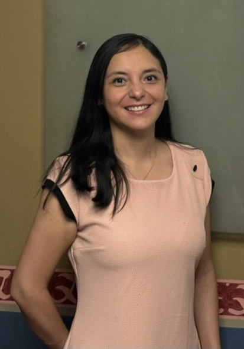
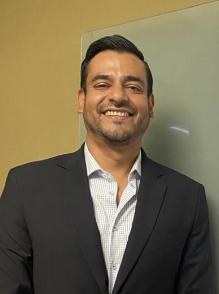
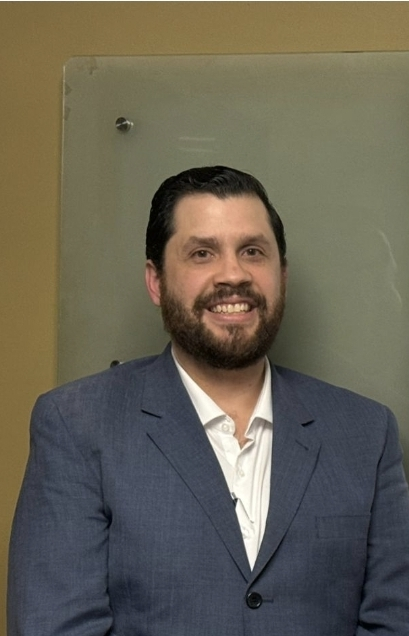
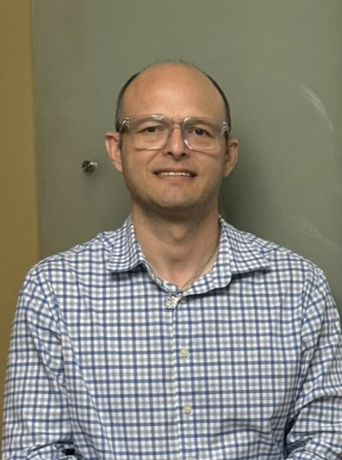

Mesa Directiva
Trayectoria profesional completa de las y los integrantes de la mesa directiva de AMEGIA.

Dra. Mildret Fernanda Martínez Arellano
Cargo: Presidenta
- Ginecólogo y Obstetra por parte de la Benemérita Universidad Autónoma de Puebla.
- Ginecólogo Infanto Juvenil certificado por la Sociedad Argentina de Ginecología Infanto Juvenil. Universidad de La Plata, Argentina.
- Curso de Alta Especialidad en Ginecología Endoscópica en el Hospital GEA González, avalado por la Universidad Nacional Autónoma de México.
- Capacitación Básica Y Avanzada “Hands On” Video Cirugía Ginecológica Infanto-Juvenil. Hospital de Pediatría SAMIC “Prof. Juan P. Garrahan”. Ciudad Autónoma de Buenos Aires, Argentina
- Diplomado Latinoamericano De Patología Del Tracto Genital Inferior Y Colposcopia. Universidad Anáhuac.
- Curso de Ligadura De Arterias Hipogástricas "TÉCNICA GALA". Hospital de La Mujer, Tlaxcala, México.
- Médico Adscrito Ginecología y Obstetricia Hospital de Gineco pediatría 3A. Instituto Mexicano del Seguro Social (2019-2025).
- Médico Adscrito Ginecología y Obstetricia Hospital Dr. Gregorio Salas. Secretaria de Salud de CDMX (2016-2017)
- Médico Adscrito Ginecología y Obstetricia, y Asistente Médico de la Dirección en Hospital Dr. Gregorio Salas. Secretaria de Salud de CDMX (2020-presente)
- Médico Ginecólogo y Obstetra, Ginecólogo Infanto Juvenil, Ginecología Endoscópica de Mínima Invasión. Consultorio privado en Unidad de Especialidades Dalinde. CDMX (2019-presente)
- Certificado por la Sociedad Argentina de Ginecología Infanto-Juvenil
- Certificado por el Consejo Mexicano de Ginecología y Obstetricia A.C.

Dr. Wilfredo José Gutiérrez Moreno
Cargo: Vicepresidente
- Ginecólogo y Obstetra por parte de la Universidad de Monterrey, Nuevo León, México.
- Ginecólogo Infanto Juvenil certificado por la Sociedad Argentina de Ginecología Infanto Juvenil. Universidad de La Plata, Argentina.
- Curso Formación en Ginecología Oncológica en el Hospital MD Anderson Cancer Center en Madrid, España.
- Entrenamiento básico y avanzado en laparoscopía ginecológica infanto-juvenil en el Centro de Simulación del Hospital de Pediatría SAMIC “Prof. Juan P. Garrahan”. Ciudad Autónoma de Buenos Aires, Argentina
- Programa de formación profesional laparoscópica avanzada en obstetricia y ginecología en el Centro de aprendizaje y simulación médica avanzada de la Universidad de Florida del Sur en Tampa, Bay
- Certificado por la Sociedad Argentina de Ginecología Infanto-Juvenil
- Certificado como Fellow of the International Federation of Pediatric and Adolescent Gynecology. (FIGIJ)
- Certificación IFEPAG I 2015 Costa Rica
- Miembro activo de la Sociedad Norteamericana de Ginecología Pediátrica y de la Adolescente. (NASPAG)
- Certificado por el Consejo Mexicano de Ginecología y Obstetricia A.C.
- Coordinador médico. Centro de Readaptación Social de Ciudad Victoria. (Octubre 2006 - Septiembre 2007)
- Coordinador médico de turno vespertino. Clínica Fomerrey 109 de la Fundación Adelaida Lafon de Muguerza A. C. (Septiembre 2007 – Febrero 2008)
- Médico Adscrito a Ginecología y Obstetricia en el Hospital Militar Regional de Especialidades, Monterrey, Nuevo León (Enero 2016 – Junio 2024)
- Médico Adscrito a Ginecología y Obstetricia en el Hospital General de Zona #6 IMSS (Abril 2012 – a la fecha)
- Practica Privada. Ginecólogo Pediatra y de la Adolescente
- Hospitales: Christus Muguerza Hospital General Conchita,
- Christus Muguerza Hospital General Sur
- Hospital Hospitaria.(Enero 2014 – a la fecha)
- Tutor Cl[inico de la residencia de ginecología y obstetricia del Christus muguerza hospital general conchita y del IMSS HGZ 6 por la universidad de Monterrey

Dr. Gonzalo Sedas Granat
Cargo: Secretario
- Ginecólogo y Obstetra por parte del Hospital Central Norte, Petróleos Mexicanos, Universidad Nacional Autónoma De México. CDMX
- Ginecólogo Infanto Juvenil certificado por la Sociedad Argentina de Ginecología Infanto Juvenil. Universidad de La Plata, Argentina.
- Titular De La Clínica De Adolescencia Del Hospital Regional Poza Rica, Veracruz, México.
- Hospital Regional De Poza Rica, Veracruz, México. (Junio 2023- Presente)
- Hospital Militar De Especialidades De La Mujer Y Neonatologia, CDMX. (Febrero 2020-2023)
- Profesor adjunto del curso de especialidad en ginecología y obstetricia por la Universidad Veracruzana
- Presidente del comité de Bioética del Hospital Regional de Poza Rica, Veracruz

Dr. Jorge Alonso López Carrasco
Cargo: Presidenta
Cargo: Tesorero
- Médico Pediatra por parte de la Universidad Autónoma del Estado de México, Toluca, México. Hospital para El Niño, Toluca, México.
- Ginecólogo Infanto Juvenil certificado por la Sociedad Argentina de Ginecología Infanto Juvenil. Universidad de La Plata, Argentina.
- Diplomado Internacional de Formación de Coordinación de Parentalidad. Impartido en modalidad en línea entre el 25 de noviembre del 2023 al 01 de junio de 2024
- Curso de Educación Continúa basado en simulación, simulación de alta y baja fidelidad Urgencias en Pediatría -2019. Sociedad Argentina de Pediatría. Buenos Aires, Argentina.
- Curso de Salud Sexual y Reproductiva en la Adolescencia. Lo que debemos saber / Lo que el médico de Adolescentes tiene que saber sobre sexualidad / Curso Online de Abuso Sexual Infantil / Curso Online Intensivo en Ginecología Infanto Juvenil 2019. Sociedad Argentina de Ginecología Infanto Juvenil SAGIJ. Buenos Aires, Argentina. 2019.
- Curso de Abuso Infantil y Juvenil. Hospital Garrahan. Jun- Sep 2019. Buenos Aires Argentina.
- 39no Congreso Argentino de Pediatría. 24, 25, 26 y 27 de Sep 2019. Sociedad Argentina de Pediatría. Rosario, Argentina.
- Anticoncepción en las Adolescencias en el marco del Plan ENIA 1 y 2. Ministerio de Salud y Desarrollo Social de la Nación. Buenos Aires Argentina. 2019
- Curso Online. COURSERA. Anticoncepción Hormonal al alcance de todos. Mayo 2019. Universidad Autónoma de Barcelona.
- Curso: The 3rd International Surgery Summer School. University of Medicine and Pharmacy Gr. T. Popa", Iasi, Rumania. 18th - 2nd of August 2010.
- Curso: Training course in Cardiac Surgery. "Cardiac Anatomy and surgical Techniques". Institute of Cardiovascular Medicine. Iasi, Rumania. 28th July 2010.
- Curso preparatorio para el USMLE (Unites States Medical Licensing Examination). University of California San Diego, USA. Oct 2009 - abril 2010.
- Curso: ATENCION INTEGRAL DEL ADOLESCENTE. Hospital General de México. Del 23 al 27 de Julio del 2007. 30 hrs curriculares. México, D. F.
- CURSO INTERNACIONAL DE MEDICINA DEL ADOLESCENTE. Hospital Infantil de México Federico Gómez. Del 14 al 18 de mayo del 2007. 28 hrs teóricas. 3 créditos. México, D. F.
Experiencia laboral:
- Pediatra y jefe de servicio de Pediatría Hospital ISSSTECALI Mexicali, Baja California. 2020 – actual.
- Docente de clínica de Pediatría, Universidad Autónoma de Baja California. Mexicali, Baja California. Agosto 2023 – 2024.
- Docente de asignatura. Universidad del Valle de México. Febrero 2022 – mayo 2023.
- Docente de asignatura. Universidad Autónoma de Baja California. Febrero 2022- Ene 2023.
- Médico de apoyo en Programa de Salud Materna y Perinatal. Departamento de equidad de género y salud reproductiva. ISESALUD. Mexicali, B. C. Marzo – mayo 2020 / Sept-Oct 2020.
- Médico Pediatra. Hospital Almater (privado). Mexicali, B. C. México. Marzo 2018 – marzo 2019.
- Atención primaria pediátrica en consulta externa y urgencias de población abierta particular, con seguros médicos privados nacionales y extranjeros.
- Médico Pediatra. Hospital General San Luis Rio Colorado, Sonora. México. Actividades asistenciales, urgencias, hospitalización, Reanimación neonatal.
- Profesor de Anatomía topográfica y Terminología médica. Universidad Autónoma de Baja California, campus Mexicali. Agosto 2018 – enero 2019.
- Instituto de Salud del Estado de México (ISEM). Jefe suplente de Centro de Atención Primaria a las Adicciones en San Mateo Otzacatipan. Universidad Tecnológica de México UNITEC campus Toluca. Agosto 2014 – febrero 2015.
- Docente de Nutrición. Asignatura Fisiopatología I y II. Agosto 2014 – febrero 2015.
- Profesor de asignatura: Morfología, Fisiología, Kinesiología, Educación en Salud, Embriología, Anatomía, terminología médica. Facultad de Deportes, Facultad de Artes, Unidad Ciencias de la Salud. Universidad Autónoma de Baja California, Mexicali. Tronco común Medicina, Enfermería, Odontología. Agosto 2009 – junio 2014.